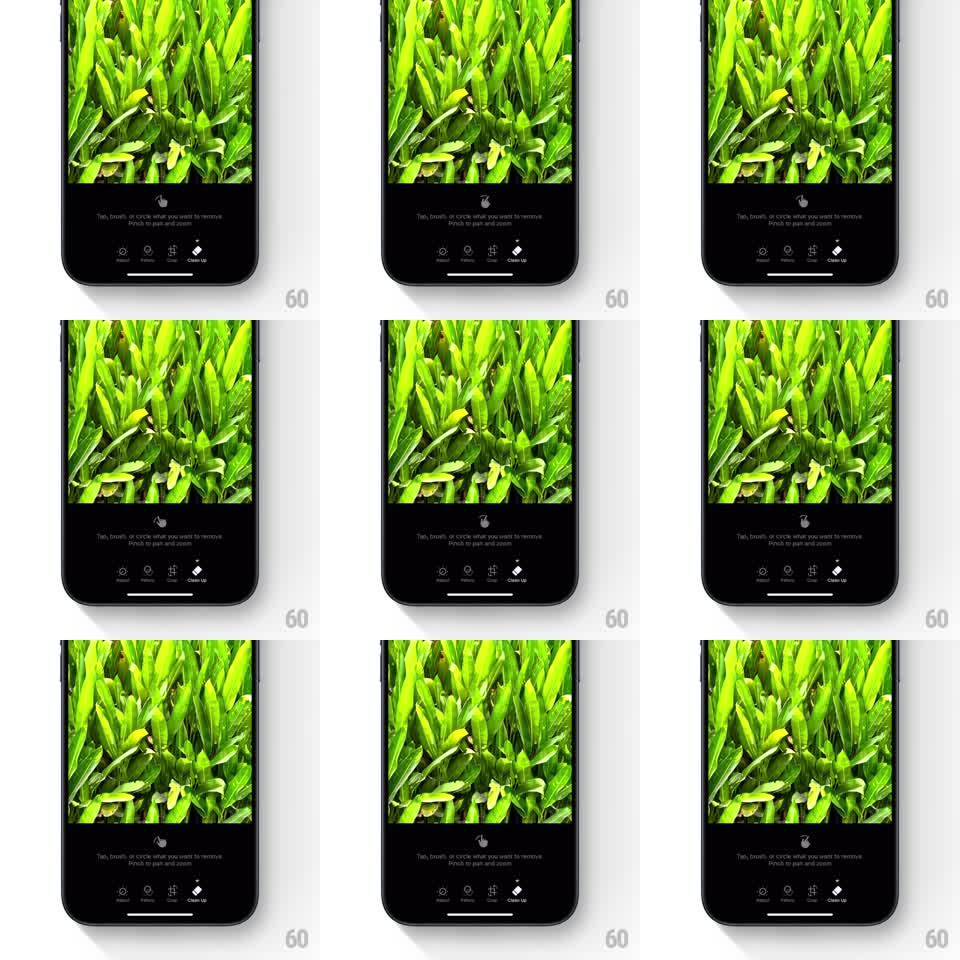

Media
Frame-by-frame

Rebuild this animation 1:1: Apple Photos' Clean Up onboarding tooltip - a looping hand icon demonstrates the tap, brush, and circle gestures above the edit toolbar while the Clean Up tool is selected.

Rebuild this animation 1:1: Apple Photos' Clean Up onboarding tooltip - a looping hand icon demonstrates the tap, brush, and circle gestures above the edit toolbar while the Clean Up tool is selected. ## Integration Integration: stack-agnostic spec - springs given as stiffness/damping, timed motions as duration + curve; map every value to your framework and animation library of choice. ## Scene The Photos editor on a green-leaves picture. Between the photo and the toolbar (Adjust, Filters, Crop, Clean Up - Clean Up highlighted), a hint strip reads "Tap, brush, or circle what you want to remove. Pinch to pan and zoom." A small hand icon above the text loops through the gestures: a tap, a short brush stroke, and a circling motion. ## Motion spec Pattern: looping gesture demo icon, ~3s per loop. - The hand icon appears at rest (300ms hold), then taps: a quick press (scale to 0.9, 120ms) with a small ripple ring at the touch point (expanding, fading, 300ms). - It then draws a short brush stroke: the hand slides 40px sideways (500ms, ease-in-out) leaving a soft highlighted trail that fades (400ms). - Finally it traces a small circle (600ms, one full loop, ease-in-out) with a thin stroke following the fingertip, which fades. - The loop holds 400ms, then repeats. The text and toolbar stay static throughout. ## Calibration - The hand is a simple outlined pointer icon - legible at small size, no realistic rendering. - Each gesture reads as a distinct beat with a rest between them. ## Reduced motion Static hand icon with the text. ## Don't miss - The demo lives in the hint strip between photo and toolbar - it never touches the photo itself. - The Clean Up toolbar icon stays highlighted the whole time.